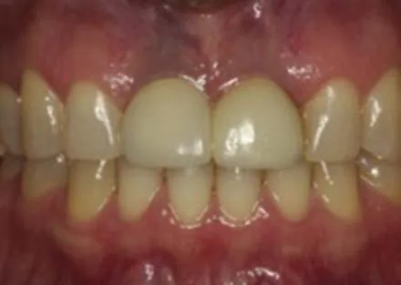
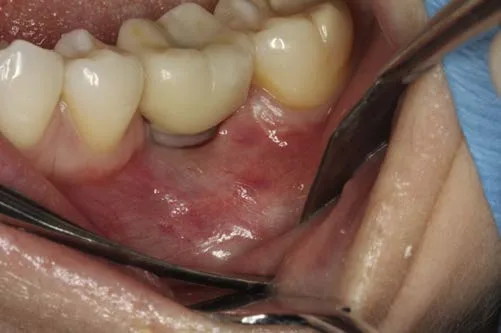

نسخه استخراجشده؛ ترجمه یا تأیید علمی انجام نشده است. وضعیت: captured
این بحث سالها جنجالی بود. امروز نتیجهی روشنی در دست است — ولی این نتیجه ظریفتر از آن است که بسیاری تصور میکنند.
مطالعهی محوری: ۶۹ بیمار و ۳۳۹ ایمپلنت، همه با رستوریشن ایمپلنت دستکم ۳ سال و تا ۲۴ سال، بهطور میانگین ۸٫۱ سال.
یافتهی اول — بافت کراتینیزه چه چیزی را بهتر میکند:
«التهاب لثه و تجمع پلاک بهطور معناداری در بیماران با کمتر از ۲ میلیمتر مخاط کراتینیزه یا ۱ میلیمتر مخاط چسبنده بالاتر بود.»
دو عدد را نگه دار: ۲ میلیمتر کراتینیزه، ۱ میلیمتر چسبنده. و این همان حداقلی است که برای سلامت لثهی دندان طبیعی هم توصیه شده است.
یافتهی دوم — و اینجا نکتهی ظریف است:
«این مطالعه همچنین نشان داد که میانگین تحلیل سالانهی استخوان تحت تأثیر مقدار مخاط کراتینیزه یا چسبنده، یا نوع پیکربندی سطح ایمپلنت (صاف در برابر زبر) نبود.»
پس بافت کراتینیزه التهاب و پلاک را بهتر میکند، ولی تحلیل استخوان را نه. این تمایز مهم است و اغلب نادیده گرفته میشود.
و صریح بدان: «نبود مخاط کراتینیزهی کافی در ایمپلنتهای داخلاستخوانی، بهویژه در ایمپلنتهای خلفی، با تجمع پلاک و التهاب لثهی بالاتر همراه بود ولی نه با تحلیل سالانهی استخوان بیشتر، صرفنظر از پیکربندی سطح ایمپلنت.»
و حالا یافتهی سوم — که غافلگیرکننده است:
«ایمپلنتهای خلفی، حتی در حضور بافت کراتینیزه، تحلیل سالانهی استخوان ۳٫۵ برابر بیشتری از ایمپلنتهای قدامی در این مطالعه داشتند (۰٫۱۴ در برابر ۰٫۰۴ میلیمتر).»
و نتیجهگیری صریح: «موقعیت ایمپلنت مهمتر از حضور یا نبود مخاط کراتینیزه بهنظر میرسد.»
این جمله را دو بار بخوان. در بحثی که سالها بر سر بافت کراتینیزه بود، حالا معلوم میشود متغیر قویتری وجود دارد که کمتر دربارهاش بحث شده: خلفی بودن یا قدامی بودن ایمپلنت.
و بیشترین تحلیل استخوان با ایمپلنتهای زبر در مخاط کراتینیزهی کمتر از ۱ میلیمتر مشاهده شد، هرچند این تفاوت از نظر آماری معنادار نبود — یعنی فقط یک روند است، نه یافتهای که بتوان بر آن تکیه کرد.

اینجا دو موضع بهظاهر متضاد کنار هم قرار میگیرند و بعد حل میشوند.
موضع اول — یک گزارش بالینی: «مهمترین معیار برای سلامت ایمپلنت در مندیبل خلفی به نبود یا حضور لثهی کراتینیزه مربوط بود.» و در همان گزارش: «مخاط متحرک و غیرکراتینیزه عمقهای پروبینگ بیشتری نشان داد، که از نظر هیستولوژیک تأیید شد.»
موضع دوم — مطالعات طولی روی دندان طبیعی: «نبود بافت کراتینیزه و چسبندهی کافی، سلامت بلندمدت بافت نرم و سخت را به خطر نمیاندازد، به شرط آنکه بیمار بهداشت خوبی داشته باشد.» دقت کن: این یافته دربارهی دندان است و مشروط به بهداشت خوب؛ نیاز به بافت کراتینیزه در ایمپلنت از دندان هم جنجالیتر است.
و یک نکتهی دیگر: «چندین گزارش بقای بلندمدت ایمپلنت را در نبود بافت کراتینیزه نشان میدهند.»
پس کدام درست است؟ راه سومی هم هست:
«اگرچه گزارشها با مخاط متحرک در مجاورت ایمپلنت محتاطترند، بافت غیرمتحرک بهجای بافت کراتینیزه، معیار اصلی نسبت به نوع بافت بهنظر میرسد.»
متغیر واقعی «تحرک» است، نه «کراتینیزه بودن». و چون این دو معمولاً با هم میآیند، سالها با هم اشتباه گرفته شدند. در آن گزارش نخست هم بافت هم متحرک بود و هم غیرکراتینیزه — پس نمیتوان گفت کدامیک عامل بوده.
و بحث با یک بازتعریف زیبا بسته میشود:
«پرسش مربوط به نیاز به بافت کراتینیزه اطراف ایمپلنتها باید به این تغییر کند: کدام را ترجیح میدهید؟ هیچکس در ادبیات نگفته است که بافت غیرکراتینیزه بر بافت کراتینیزه ترجیح دارد؛ جنجال فروکش کرده است.»
این یک درس روششناختی هم هست: وقتی پرسش «آیا ضروری است؟» باشد، پاسخ میتواند «نه» باشد و به رها کردن آن بینجامد. وقتی پرسش «کدام را ترجیح میدهی؟» باشد، پاسخ روشن است.
و مزیت عملی که کمتر گفته میشود: «فایدهی دیگر بافت کراتینیزه، سهولت بالینی درمان برای کاهش عمق پاکت در صورت رخ دادن تحلیل استخوان کرستال است.»
یعنی بافت کراتینیزه فقط برای امروز نیست؛ گزینههای درمانی فردا را باز نگه میدارد.
و توصیهی زمانبندی: «بافت کراتینیزهی کافی ایدهآل باید بهصورت بالینی پیش از کاشت ایمپلنت ایجاد شود، بهویژه در نواحی خلفی.»
پیش از کاشت. بهویژه خلفی. — و «خلفی» را با آن ۳٫۵ برابر کنار هم بگذار.
و متغیر دیگری که باید کنارش دید — عمق کاشت:
«هر زمان ممکن باشد، ایمپلنت باید در سطح کرست استخوانی یا بالاتر از آن قرار داده شود تا از افزایش عمق سولکوس اطراف ایمپلنت مرتبط با تحلیل استخوان کرستال پس از قرار دادن اباتمنت جلوگیری شود.»
و مثالی که تفاوت را نشان میدهد: «ایمپلنتی که در ابتدا ۲ میلیمتر بالای استخوان قرار گرفته و ایمپلنت دیگری که ۲ میلیمتر زیر استخوان کانترسینک شده، پس از اتصال اباتمنت تاریخچهی تحلیل استخوان اولیهی متفاوتی دارند.»
و اینجا هم یک اختلاف رویه وجود دارد که باید بشناسی: «بسیاری از پروتکلهای جراحی، قرار دادن ایمپلنتهای داخلاستخوانی را در سطح کرست ریج یا زیر آن در جراحی مرحلهی اول توصیه میکنند» — که خلاف توصیهی بالاست. پس این یک نقطهی اختلاف زنده در ادبیات است، نه یک قاعدهی حلشده.
و آخرین قطعه — چرا سولکوس عمیق مهم است: «وقتی شیار در معرض محیط دهان قرار گیرد، تحلیل استخوان معمولاً دستکم ۰٫۵ میلیمتر زیر اتصال مشاهده میشود.»
